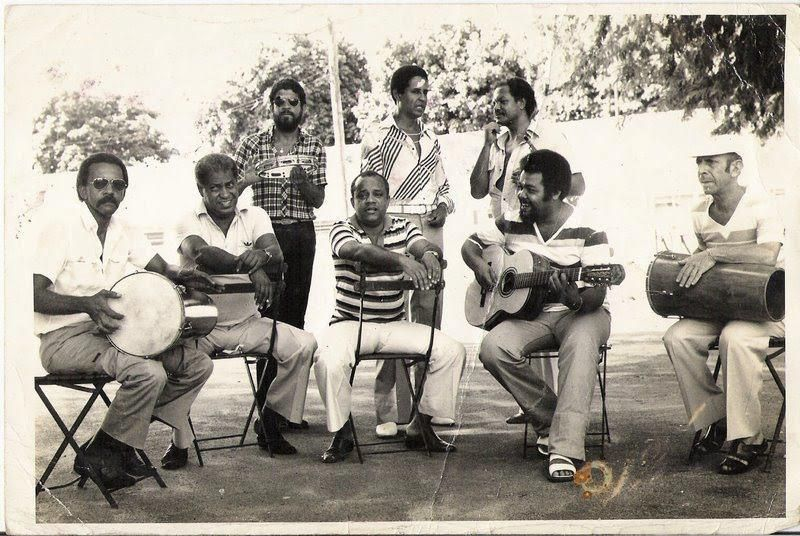
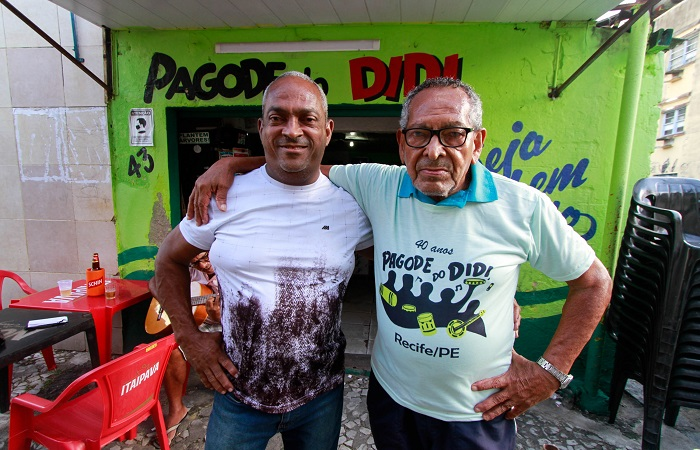
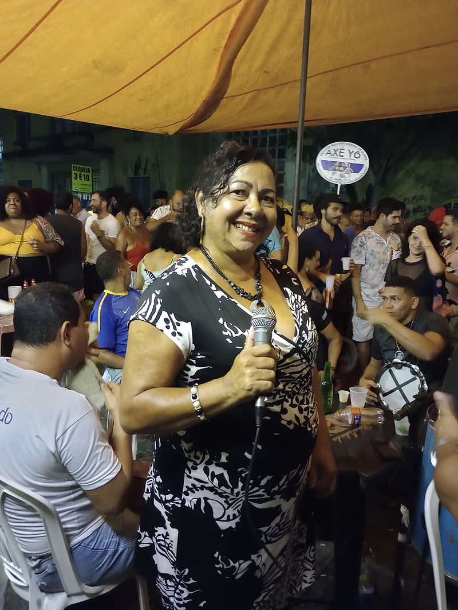

Curiosidades Sobre o Pagode do Didi

Arlindo Cruz, Almir Guineto, Negritude Jr, Jovelina Pérola Negra, Bezerra da Silva, Nelson Rufino, Noca da Portela, Délcio Luiz foram alguns dos nomes que encontravam em Didi um espaço na visitas do Recife

O bar é o ganha pão de toda uma familía e comunidade do zumbi, que fica na zona oeste de recife e onde didi mora a mais de 50 anos. Se você parar um dos atendentes e perguntar, saberá qual o grau de parentesco com o dono. Todos que ali trabalham são da familía

Didi também abriu as portas para muitos artistas locais, uma grande exemplo é maria pagodinho, presente todas as sextas no pagode, que começa o seu show sempre após as 22:00, quando o local já está abarrotado de pessoas prontos para aplaudir assim que ela começa a cantar